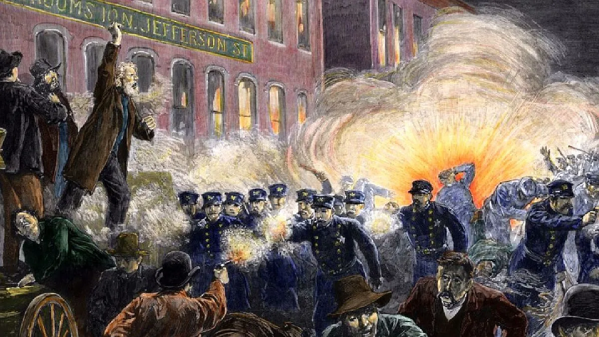

Los hechos que dieron lugar a esta conmemoración están contextualizados en los albores de la Revolución Industrial en los Estados Unidos. A fines del siglo XIX Chicago era la segunda ciudad en número de habitantes de Estados Unidos. Del oeste y del sudeste llegaban cada año por ferrocarril miles de ganaderos desocupados, creando las primeras villas humildes que albergaban a cientos de miles de trabajadores. Además, estos centros urbanos acogieron a inmigrantes de todo el mundo a lo largo del siglo XIX.
Una de las reivindicaciones básicas de los trabajadores era la jornada de ocho horas. Uno de los objetivos prioritarios era hacer valer la máxima de: «ocho horas de trabajo, ocho horas de ocio y ocho horas de descanso». En este contexto se produjeron varios movimientos; en 1829 se formó un movimiento para solicitar a la legislatura de Nueva York la jornada de ocho horas. Antes existía una [2]ley que prohibía trabajar más de dieciocho horas, «salvo caso de necesidad». Si no había tal necesidad, cualquier funcionario de una compañía de ferrocarril que hubiese obligado a un maquinista o fogonero a trabajar jornadas de dieciocho horas diarias debía pagar una multa de veinticinco dólares. La mayoría de los obreros estaban afiliados a la Noble Orden de los Caballeros del Trabajo, pero tenía más preponderancia la American Federation of Labor (Federación Estadounidense del Trabajo), en su inicio socialista (aunque algunas fuentes señalan su origen anarquista). En su cuarto congreso, realizado el 17 de octubre de 1884, ésta había resuelto que desde el 1 de mayo de 1886 la duración legal de la jornada de trabajo debería ser de ocho horas, yéndose a la huelga si no se obtenía esta reivindicación y recomendándose a todas las uniones sindicales que tratasen de hacer leyes en ese sentido en sus jurisdicciones. Esta resolución despertó el interés de las organizaciones, que veían la posibilidad de obtener mayor cantidad de puestos de trabajo con la jornada de ocho horas. En 1868, el presidente Andrew Johnson promulgó la llamada ley Ingersoll,[3] estableciendo la jornada de ocho horas. Al poco tiempo, diecinueve estados sancionaron leyes con jornadas máximas de ocho y diez horas, aunque siempre con cláusulas que permitían aumentarlas a entre catorce y dieciocho horas. Aun así, debido a la falta de cumplimiento de la ley Ingersoll, las organizaciones laborales y sindicales de Estados Unidos se movilizaron. La prensa generalista de Estados Unidos, reaccionaria y alineándose con las tesis empresariales, calificaba el movimiento como «indignante e irrespetuoso», «delirio de lunáticos poco patriotas», y manifestó que era «lo mismo que pedir que se pague un salario sin cumplir ninguna hora de trabajo».[4
El sábado 1 de mayo de 1886,[5] doscientos mil trabajadores iniciaron la huelga mientras que otros doscientos mil obtenían esa conquista con la simple amenaza de paro. En Chicago, donde las condiciones de los trabajadores eran mucho peores que en otras ciudades, las movilizaciones siguieron los días 2 y 3 de mayo. La única fábrica que trabajaba era la de maquinaria agrícola Helmans, en huelga desde el 16 de febrero porque querían descontar a los obreros una cantidad de sus salarios para la construcción de una iglesia. La producción se mantenía a base de esquiroles. El día 2, la policía había disuelto en forma violenta una manifestación de más de cincuenta mil personas y el día 3 se celebraba una concentración en frente de sus puertas; cuando estaba en la tribuna el anarquista August Spies, sonó la sirena de salida de un turno de rompehuelgas. Los concentrados se lanzaron sobre los scabs (amarillos) comenzando una pelea campal. Una compañía de policías, sin aviso alguno, procedió a disparar a quemarropa sobre la gente produciendo seis muertos y decenas de heridos. El periodista Adolph Fischer, redactor del Arbeiter Zeitung, corrió a su periódico donde redactó una proclama (que luego se utilizaría como principal prueba acusatoria en el juicio que le llevó a la horca) imprimiendo veinticinco mil octavillas. La proclama decía:
La Prensa reclamaba un juicio sumario por parte de la Corte Suprema, responsabilizando a ocho anarquistas y a todas las figuras prominentes del movimiento obrero. El 21 de junio de 1886, se inició la causa contra treinta y un responsables, que luego quedaron en ocho. Las irregularidades en el juicio fueron muchas, violándose todas las normas procesales en su forma y fondo, tanto que ha llegado a ser calificado de juicio farsa. Los juzgados fueron declarados culpables. Tres de ellos fueron condenados a prisión y cinco a muerte, los cuales serían ejecutados en la horca. El detalle de las condenas es el siguiente:
